A common approach to learning word representations is to consider a word’s most common neighbours.
We start with a corpus W (a large and structured set of texts). We then define a context D, which determines exactly what requirements need to be met in order for a word to be considered a ‘neighbour’ c to any selected word w . We will here define a context as the six words surrounding (three preceeding and three following) the currently selected word (although it could be defined differently to this). We can the calculate the co-occurrence probabilites as follows:
Here, n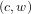 gives the number of times that c occurs in the context of w.
For each word w in the corpus W, we then end up with a probability distribution, Pw = 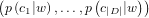 that gives the probability of the co-occurence each context word c in the set of context words D. [1, 2]
For example, consider a very simple corpus that consists of the following four texts:
“Projects which are open-source, and developed collaboratively by diverse communities, generate an increasingly more diverse scope of design perspective than any one company is capable of developing.”
“If a program is open-source, its source code is freely available to its users.”
“When an author contributes code to open-source projects, they do so under an explicit license or an implicit license.”
“Contributing to open-source software is an excellent way to improve your programming skills.”
Let us select the word open-source as w. We then get the following counts n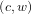:
| Context word c | Count n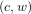 |
| projects | 2 |
| which | 1 |
| are | 1 |
| and | 1 |
| developed | 1 |
| collaboratively | 1 |
| a | 1 |
| program | 1 |
| is | 2 |
| its | 1 |
| source | 1 |
| code | 2 |
| contributes | 1 |
| to | 2 |
| they | 1 |
| do | 1 |
| contributing | 1 |
| software | 1 |
| an | 1 |
You can see how, as we increased the size of the corpus by finding more and longer relevant texts, we would begin to associate the word open-source strongly with words such as project, developed, program, code, contributes, software and so on. We would see similar counts for similar words. For example, a vector generated from the co-occurence probabilities of the word charitable might be close because of surrounding context words such as free and contributing. A word such as programming would be considered close due to words such as code and project. We can determine this ‘closeness’ of words using the Hellinger distance.
The Hellinger distance is a measure of the similarity of two probability distributions. Given the two discrete probability distributions p = 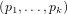 and q = 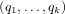, the Hellinger distance is defined as:
Note that the Hellinger distance will always take a value between 0 and 1, due the the constant factor of 1∕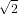. This is one property of the Hellinger distance which makes it preferable to the standard Euclidean distance for this purpose. [2]
The model we have so far is fine, except for the fact that each probabibility distribution pw will generate a vector containing hundreds of thousands of entries (potentially as large as the number of words in W). A common approach to reducing the dimensionality of this vector (generally to 50 or 100 dimensions) is to consider a co-occurence matrix that only includes the most relevant context words, and use principal component analysis (PCA) to reduce dimensionality without losing too much meaning. [2] The use of autoencoders is an alternative method.
An Approach using Autoencoders As the input, we provide an ***autoencoder with a probability distribution 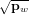. We use a standard squared difference cost function:
|
| (1) |
The autoencoder will learn a more compact (reduced dimensionality) representation for this distribution, which can then be compared with other distributions using the Hellinger distance. [3]
We will now discuss a very simple method for finding vector representations for phrases. There are many methods for doing so, most of which perform better than the method we discuss here.
To determine representations for phrases, we simply add word representations. This will work for simple phrases such as “the red cat”, where the meaning is simply a sum of its parts. It does not work for more complex phrases (such as those involving negation).
We start with a phrase p = 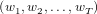 of T words. We simple feed 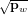 into the autoencoder for each word w in the phrase p, which returns for each word, the vector representation xw = f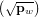. The very simple process of element-wise addition gives us the representation of the phrase p as:
Training We can improve our representation by a method of training which involves predicting whether words are in a given phrase or not. We use a ranking-type cost on each phrase:
|
| (2) |
Due to the large size of W, we might choose to use negative sampling to speed up the training process. This reduces the number of words we will need to consider from hundreds of thousands to somewhere to the order of ten. [4]
Joint Learning The benefit of this method (autoencoders), is that we can learn word representations that are optimal for summing, by jointly minimising the objective functions 1 and 2 over the training data.
Improving Phrase Representations
See ***Recursive Autoencoders, ***Sentiment Analysis and ***Paraphrase Detection
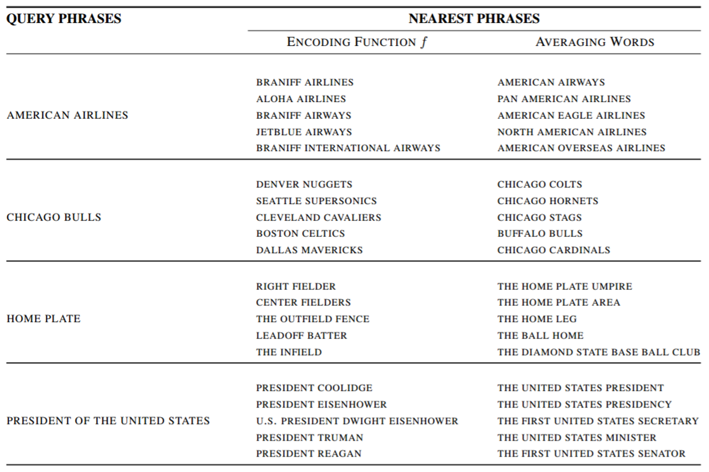
An example implementation in Python, using TensorFlow can be found at https://github.com/ParallelDots/WordEmbeddingAutoencoder.
[1] Khazan L. Autoencoders and Word Embeddings; 2016. Available from: https://ayearofai.com/lenny-_2-_autoencoders-_and-_word-_embeddings-_oh-_my-_576403b0113a#.m99qy1yii.
[2] How to Use Words Co-Occurrence Statistics to Map Words to Vectors;. Available from: https://iksinc.wordpress.com/tag/hellinger-_distance/.
[3] Lebret R, Collobert R. ”The Sum of Its Parts”: Joint Learning of Word and Phrase Representations with Autoencoders. CoRR. 2015;abs/1506.05703. Available from: http://arxiv.org/abs/1506.05703.
[4] McCormick C. Word2Vec Tutorial Part 2 - Negative Sampling; 2017. Available from: http://mccormickml.com/2017/01/11/word2vec-_tutorial-_part-_2-_negative-_sampling/.